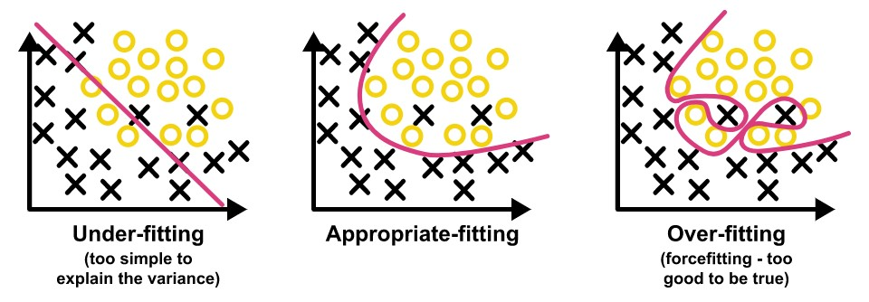
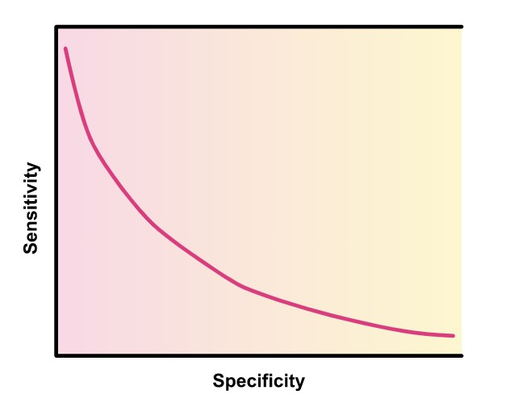
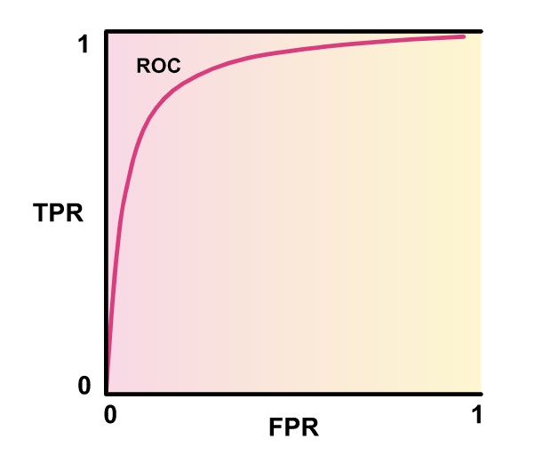
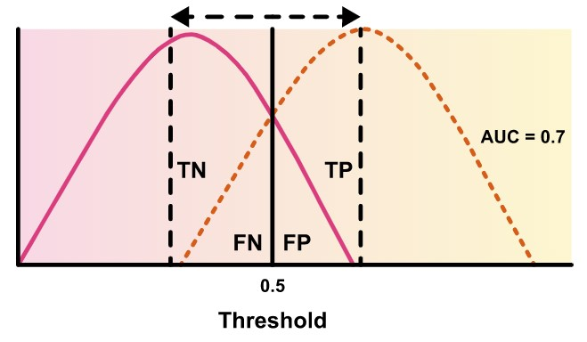

Unit 11 learnings
Model Selecion
Unit 11 has focussed on unit selection and learnings from various sectors using articial intelligence and the problems they have faced.
Model selection is the process of selecting one final machine learning model from a collection of competing machine models, trained on the same dataset. (Essex, 2022) states that all models have some
predictive error given the noise in the data, the sampled data not having enough features, and areas where the different models excel, as well as limitations of each different model.
Bias variance problem
Bias is the difference between the average prediction of a model, and the actual value the model is trying to predict (Singh, 2018). High bias can result in an algorithm failing to find relevant relationships
between the data and the target output (Essex, 2022). High bias can also be referred to as Underfitting. The following steps can be used to reduce Underfitting:
- More input data
- Longer training duration
- Increasing the number of parameters of the model
In our assessment 2, we have not encountered underfitting on our model. The 50000 image training datset was split into 40000 training images and 10000 validation images.
Variance is the variability of model prediction for a given data point. A model with high variance is fit too well to the training dataset (Singh, 2018), and does not generalise on data it has not seen before.
Overfitting is the term used for datasets which exhibit high variability. Some of the steps for reducing an overfit model include:
- Addition of more training data
- Data Augmentation techniques (such as copping and rotating)
- Simplification of the model
- Change to the training process (such as loss function used)
- Early termination
- Regularization (Such as dropout or L1/L2 regularization)
In our model in assessment 2 we have encountered overfitting of the moel. We used dropout at certain stages of the network to add non linearity to the model, which we found worked well to ensure overfitting
is minimal.
The following graph depicts the fit of a model:

Diagram of different fit scenarios on medel, (University of Essex, 2022)
I have found the above graph very helpful to explain this concept. In the left most graph, an underfit (high bias) model is shown, and as can be seen, the model has not been able to learn all the model data for accuracte predictions. the middle graph shows a very good fit to much of the input data. A model fit in such a manner (so as to have a fuction capable of producing a good split between class boundaries is optimal. In the rightmost graph, a depiction of an overfit model (hign variability) is shown. This model has been trained to learn the training dataset and its nuances, and will perform poorly on new data.
Model selection techniques
Probabilistic methods:
- Akaike information criterion
- Bayesian information criterion
- Minimum description lenght
- Structural risk minimization
Resampling methods:
- Random train/validation splits
- crpss validation (Eg, K-Fold)
- Bootstrapping
Sensitivity and specificity
Senitivity measures the total number of true positive evaluations over the number of true positive and false negative observations and is igven by the following formula:
- (Number of true positives / Number of true positives + Number of false negatives)
Specificity measures the total number of true negatives over the number of true negative and false positive observations, and is given by the following formula:
- (Number of true negatives / number of true negatives + number of false positives)

Illustration of sensitivity vs specificity, (University of Essex, 2022)
Sensitivity is thus negatively correlatd to specificity, meaning that as the sensitivity increases, the specificity decreases and vice versa (Opthamol JI, 2008). The measure of sensitivtiy leads us into
two imporant concepts, first being error type. Namely, two error types exist, type 1 and type 2 errors. A type 1 error occurs when the true value of a sample is classified positive when it is not, for instance
when a person without cancer is predicted to have cancer. Type 2 errors occur when the sample is classified negative when the true value is not, for instance if a person who has cancer is classified as not
having cancer.
The second concept is the Receiver operating characteristic (ROC) and area under curve (AUC), and is very important in model selection, as it gives us a good indication of model performance in how well the model
has learned from the training data.

Illustration of ROC curve, (University of Essex, 2022)
The ROC curve takes the value of true positive rate vs false positive rate, looking at the area under the curve gives an indication of model performance.

Illustration of effect of true positive rate and false positive rate on ROC curve, (University of Essex, 2022)
Moving from the left increases sensitivity (more true positives correcly identified), but also decrease specificity (more tru negatives correctly classified). AUC as the ratio of TPR and FPR provides
an understanding of where to set the threshold or cut-off point.